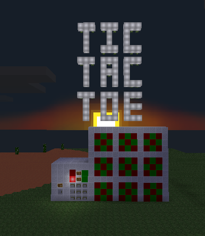
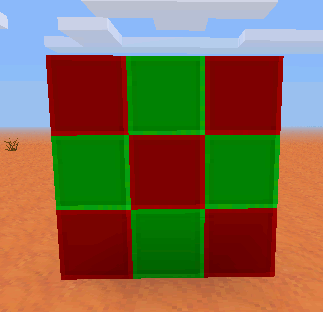
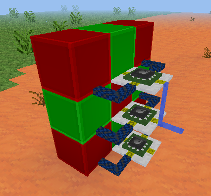
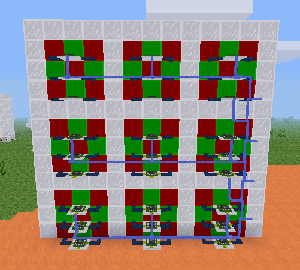

Mesecons Laboratory
Adventures in digital circuitry.
Tic-Tac-Toe Machine
16/3/13 - Uberi
Difficulty level:
 (5/10)
(5/10)
This article assumes you have the Digilines mod, which I generally consider a de facto part of Mesecons. It is still possible to complete it without this mod, but replacing its functionality with fancy wiring is an exercise left to the reader.
Unless you've been living under a rock five hundred meters below the surface of Europa, you've probably heard of tic-tac-toe. Maybe. In any case, I won't be explaining how it's played; if you care to refresh your memory, here's a lovely Wikipedia article. Better? Better.
This article is a work-in-progress! Check out some of the other articles at the homepage!
Tic-tac-toe is a nice game to build - the rules are quite simple, so we can focus more on the aesthetics and design rather than worrying about the little details.
Step 1: Design
Let's figure out what we want by the time the build is done:
- A screen that shows the current state of the game - the three by three grid of X's, O's, or blank.
- A way to actually enter moves into the game.
- A turn system, which only allows one player to move at a time, and alternates between the two players.
In the interests of simplicity, we will be building each component separately. In the end, everything will be linked together to make the final game.
Step 2: Creating the screen
The screen is a good place to start. After all, it's where players will check on their progress. We want to make the screen as seamless and useful as possible.
The screen will have nine cells in total, and each cell needs to be able to display either an X, an O, or a blank space. Here's the design that I used:
Now to add the control mechanism. We want a nice, simple interface that lets us set the value of any cell. For that, I'm going to set up some Luacontrollers and wire them together with digilines:
The top and bottom Luacontrollers have the following code:
if event.channel == "set11" then
if event.msg == 1 then
port.a, port.b, port.d = false, true, true
elseif event.msg == 2 then
port.a, port.b, port.d = true, false, false
else
port.a, port.b, port.d = false, false, false
end
elseif event.channel == "clear" then
port.a, port.b, port.d = false, false, false
end
The middle one is similarly programmed, except with reversed patterns for X and O:
if event.channel == "set11" then
if event.msg == 1 then
port.a, port.b, port.d = true, false, false
elseif event.msg == 2 then
port.a, port.b, port.d = false, true, true
else
port.a, port.b, port.d = false, false, false
end
elseif event.channel == "clear" then
port.a, port.b, port.d = false, false, false
end
You'll notice that the cell now responds to a digiline signal on the "set11" channel. The channel message, being one of the numbers 0 to 3, set the cell to blank, X, or O, respectively.
Before we continue, I should explain the way the screen works. The idea is that there is a single digiline conduit leading out of it, on which you can send a digiline signal "1" on channel "set23" and have the cell in column 2, row 3 be set to X (remember, 0-3 denotes blank, X, and Y, respectively).
We now have the smallest possible cell that can display all the symbols we want, only 3 by 3 by 3! Let's build 8 more of them:
I also added a border, so the players can distinguish between individual cells, and wired together the digilines for each cell. Now we can control the whole screen using only one digiline!
Now we program each Luacontroller to respond on its own channel. For example, the bottom-right one in the image would respond to signals on the channel "set11", and the top-left would respond on the channel "set33". The numbers go from right to left and top to bottom, since in the image we are looking at the back of the screen. For example, the code for the middle Luacontroller in the left-center cell appears as follows:
if event.channel == "set32" then -- <<<<<< THIS PART WAS CHANGED
if event.msg == 1 then
port.a, port.b, port.d = true, false, false
elseif event.msg == 2 then
port.a, port.b, port.d = false, true, true
else
port.a, port.b, port.d = false, false, false
end
elseif event.channel == "clear" then
port.a, port.b, port.d = false, false, false
end
The only thing changed from the original cell is that "set11" has been replaced by "set32" in the Luacontrollers, representing column 3, row 2.